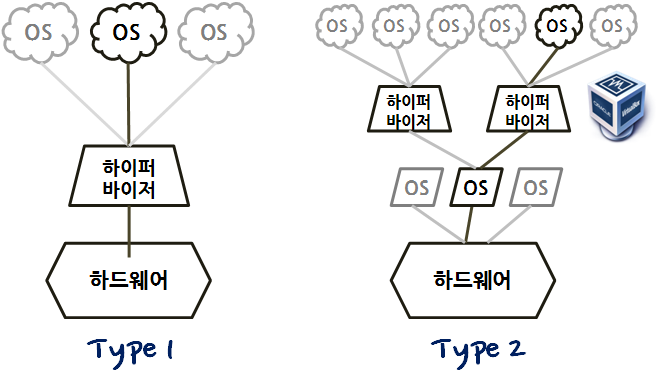
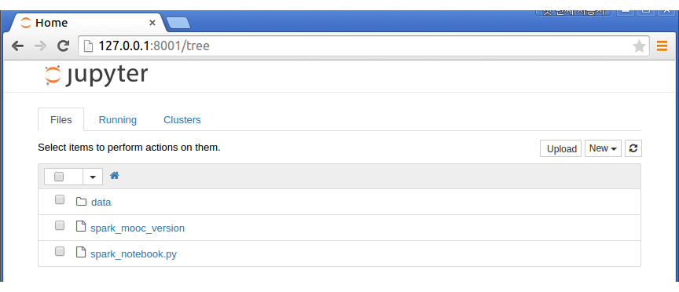
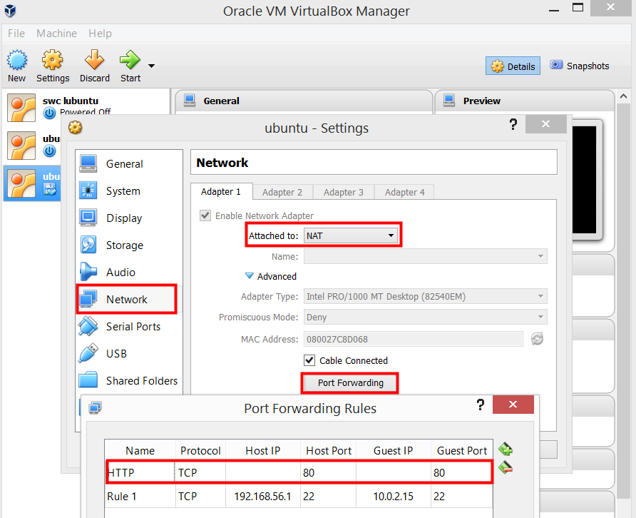

아마존 웹서비스
가상 개발환경 구축
학습 목표
- 가상 개발환경을 구축한다.
- 가상상자와 부랑자를 설치한다.
1. 클라우드 하이퍼바이저 유형
개인 가상컴퓨터(Virtual Machine)를 구축하는 방법은 Type 2 유형을 많이 쓴다. 개인 가상컴퓨터가 가능해진 이유는 중앙처리장치 성능이 높아지고 주기억장치 및 보조기억장치 저장공간이 늘어남에 따라 넉넉한 하드웨어 자원을 바탕으로 개인 가상컴퓨터 구축도 매우 쉬워졌다. 개인 가상 컴퓨터를 구축을 위해서 먼저 하이퍼바이저 이해가 필요하다.
하이퍼바이저(hypervisor)는 호스트 컴퓨터에서 다수의 운영 체제(operating system)를 동시에 실행하기 위한 논리적 플랫폼(platform)을 말한다. 가상화 머신 모니터(virtual machine monitor, 줄여서 VMM)라고도 부른다.
하드웨어에서 직접 실행되며 운영 체제는 하드웨어 위의 하이퍼바이저 위에서 2번째 수준으로 실행되는 Type 1 (베어메탈)형 하이퍼바이저(hypervisor)가 있고, Type 2형 하이퍼바이저는 일반 프로그램과 같이 호스트 운영 체제에서 실행되며 VM 내부에서 동작되는 게스트 운영 체제는 하드웨어에서 3번째 수준으로 실행된다. 개인용 가상화 클라우드 환경으로 사용되는 대표적인 것이 오라클 버추얼박스(Virtual Box)다.
출처: 한국 위키피디아

X86 중앙처리장치가 올라간 개인용 하드웨어 컴퓨터에 윈도우 운영체제가 주인 운영체제(Host Operating Syste)가 일반적으로 설치된다. 하지만, 개인용 PC 운영체제로 우분투 리눅스를 설치하려고 하면 과거에는 윈도우를 삭제하고 설치해야 됐다. 하지만, 가상상자 같은 가상화 소프트웨어를 설치하면 윈도우 상태에서 우분투 리눅스를 사용할 수도 있다. 반대로 맥이나 리눅스를 사용한 경우에도 가상화 소프트웨어를 설치하고 윈도를 응용프로그램처럼 사용하는 것도 많이 사용된다.
1. 리눅스 환경 가상상자 설치
1.1. 현 리눅스 시스템 환경 파악
맥을 포함한 리눅스 사용자는 윈도우, 윈도우 사용자의 경우 리눅스가 필요하다. 이를 위해 필요한 것이 하이퍼바이저이고, 윈도우 사용자나 리눅스 사용자가 많이 사용하는 Type 2형 가상상자를 설치한다.
리눅스 사용자의 경우 본인이 사용하는 리눅스에 대한 정확한 정보가 필요하다. 이를 위해 필요한 정보를 다음 명령어를 통해 확인한다.
root@dev-hangul:~# lsb_release -aNo LSB modules are available.
Distributor ID: Ubuntu
Description: Ubuntu 14.04.2 LTS
Release: 14.04
Codename: trustylsb_release -a 명령어를 통해서 우분투 14.04이고 코드명은 trusty다.
1.2. 가상상자 설치
상기 정보를 바탕으로 버츄얼 박스를 설치한다. nano /etc/apt/sources.list 명령어를 통해서 상기 코드명에서 확인한 것과 매칭되는 것을 골라 /etc/apt/sources.list에 추가한다. trusty 코드명이기 때문에 deb http://download.virtualbox.org/virtualbox/debian trusty contrib을 선택한다. 다른 배포판의 자세한 정보는 askubuntu나 virtualbox.org를 참조한다.
보안키를 추가하고 나서 virtualbox-4.3을 설치한다.
root@dev-hangul:~# sudo sh -c 'echo "deb http://download.virtualbox.org/virtualbox/debian $(lsb_release -sc) contrib" >> /etc/apt/sources.list'
root@dev-hangul:~# wget -q http://download.virtualbox.org/virtualbox/debian/oracle_vbox.asc -O- | sudo apt-key add -
root@dev-hangul:~# sudo apt-get update
root@dev-hangul:~# sudo apt-get install virtualbox-4.3
root@dev-hangul:~# sudo apt-get install dkms
root@dev-hangul:~# VBoxManage --version4.3.28r100309특히, 우분투/데비안 사용자는 dkms 팩키지를 설치해서 다음번 apt-get upgrade에 리눅스 커널 변경에 맞춰 버추얼박스 커널 모듈 3종 세트(vboxdrv, vboxnetflt, vboxnetadp)가 자동으로 갱신되게 한다. VBoxManage --version 명령어로 정상적으로 버츄얼박스가 설치된 것을 확인한다.
1.3. 부랑자(Vagrant) 설치
부랑자(Vagrant) 가장 최신버젼을 설치한다. 먼저 부랑자(Vagrant) 사이트에 접속해서 다운로드 사이트로 들어간다. 리눅스 버전을 골라 우클릭하고 링크주소복사 해서 wget 명령어로 다운로드해서 설치한다.
root@dev-hangul:~# wget https://dl.bintray.com/mitchellh/vagrant/vagrant_1.7.1_x86_64.deb
root@dev-hangul:~# sudo dpkg -i vagrant_1.7.1_x86_64.deb
root@dev-hangul:~# vagrant -vVagrant 1.7.11.4. 가상 컴퓨터 SSH 접속
버츄얼박스에 올라온 가상컴퓨터에 접속하는 알려진 최상의 방법은 포트 포워딩(Port Forwarding)이다. 네트워크 주소 변환(network address translation, NAT)은 사설 네트워크에 속한 여러 개의 호스트가 하나의 공인 IP 주소를 사용하여 인터넷에 접속하는데 많이 사용된다.
VBoxManage showvminfo 명령어로 포드번호를 확인한다. ssh 포트는 2222으로 설정되어 있다. 본인이 가상컴퓨터 이미지를 만든 경우 버츄얼박스 가상컴퓨터에 ssh 연결에 대한 자세한 사항은 다음 웹사이트를 참조한다.
[xwmooc:~/spark/mooc-setup-master ] $ VBoxManage showvminfo sparkvm | grep 'Rule'NIC 1 Rule(0): name = ssh, protocol = tcp, host ip = 127.0.0.1, host port = 2222, guest ip = , guest port = 22
NIC 1 Rule(1): name = tcp4040, protocol = tcp, host ip = , host port = 4040, guest ip = , guest port = 4040
NIC 1 Rule(2): name = tcp8001, protocol = tcp, host ip = , host port = 8001, guest ip = , guest port = 8001ssh -p 포트번호 2222를 통해 사용자 vagrant로 로컬컴퓨터에 로그인했다.
[xwmooc:~/spark/mooc-setup-master ] $ ssh -p 2222 vagrant@127.0.0.1vagrant@127.0.0.1's password:
Welcome to Ubuntu 14.04.2 LTS (GNU/Linux 3.13.0-53-generic i686)
* Documentation: https://help.ubuntu.com/
System information as of Thu Jun 11 04:56:02 UTC 2015
System load: 0.61 Processes: 77
Usage of /: 3.3% of 39.34GB Users logged in: 0
Memory usage: 4% IP address for eth0: 10.0.2.15
Swap usage: 0%
Graph this data and manage this system at: https://landscape.canonical.com/
Get cloud support with Ubuntu Advantage Cloud Guest: http://www.ubuntu.com/business/services/cloud
Last login: Thu Jun 11 04:56:03 2015 from 10.0.2.21.5. Xen 하이퍼바이저 오류
vagrant up을 실행서 다음과 같은 오류가 발생한다면, sudo apt-get update && sudo apt-get dist-upgrade 명령어로 깔끔한 상태로 다시 설치한다. 그럼에도 불구하고 vagrant up 명령어로 실행을 해도 오류가 생긴다. 그래서 sudo /etc/init.d/vboxdrv setup 명령어로 재설치를 한다.
VirtualBox is complaining that the kernel module is not loaded. Please run `VBoxManage --version` or open the VirtualBox GUI to see the error message which should contain instructions on how to fix this error.root@dev-hangul:~# sudo apt-get update && sudo apt-get dist-upgrade
root@dev-hangul:~# sudo apt-get install build-essential libssl-dev linux-headers-`uname -r`
root@dev-hangul:~# sudo apt-get install dkms
root@dev-hangul:~# sudo /etc/init.d/vboxdrv setup(Running VirtualBox in a Xen environment is not supported) 메시지가 의미하는 바는 소프트레이어는 Xen 하드웨어 가상 컴퓨터(Hardware Virtual Machine)를 사용하고 있다. 그래서 Xen 하이퍼바이저 위에 동일한 Xen 하이퍼바이저를 사용할 이유가 없다.
Stopping VirtualBox kernel modules ...done.
Uninstalling old VirtualBox DKMS kernel modules ...done.
Trying to register the VirtualBox kernel modules using DKMS ...done.
Starting VirtualBox kernel modules ...failed!
(Running VirtualBox in a Xen environment is not supported)2. 윈도우 환경 가상 개발환경 개발환경 구축

2.1. 가상상자 (버츄얼박스, VirtualBox)
- 우분투 14.04 설치 이미지를 다운로드한다. Ubuntu Server 14.04.3 LTS 다운로드
- 가상상자를 다운로드 한다. 가상상자 다운로드
- 가상상자에 다운로드 받은 우분투 14.04 버젼을 설치한다.
- 가상상자를 실행하고
새로 만들기(N)를 클릭한다. - 가상상자 명칭을
ubuntu로 정하고 기본설정값을 따라 설정을 완료하면ubuntu전원 꺼짐 상태로 가상상자 하나가 생성된다.
- 가상상자를 실행하고
ubuntu가상상자를 우클릭설정으로 들어가고 대화상자에서어댑터 1브리지 어댑터를 선택하고 저장한다.- 다시
ubuntu가상상자를 우클릭하고시작(T)를 눌러 다운로드 받은 우분투 이미지를 선택한다. - 일반 컴퓨터에 우분투를 설치하는 기분으로 쭉 설치한다.
root사용자 대신 기본 사용자를 정하게 된다. 예를 들어xwmooc등 임의 사용자를 생성하고, 추후ssh로그인에 사용한다.
2.2. 가상상자 접속하기
- 터미널을 실행하고,
sudo apt-get install openssh-server명령어로 ssh 로그인 가능케 소프트웨어를 설치한다. - 가상상자 우분투 터미널을 실행하고
ifconfig명령어로 IP주소를 확인한다. 통상 10.0.2.15 가 된다. - 호스트 운영체제(예, 윈도우가 설치되면 호스트 운영체제는 윈도우)의 IP주소를 확인하는 절차는
시작→실행(R)하고ncpa.cpl명령어를 입력 혹은,시작→네트워크 연결→VirtualBox Host-Only Network을 선택하고 우클릭해서 IP주소를 확인한다. 통상 192.168.56.1이된다.
- 우분투가 설치된 가상상자에 네트워크 환경설정을 한다. 포트포워딩(port forwarding) 기능을 설정해서 호스트 운영체제 명령라인 인터페이스 쉘을 사용해서
ssh로그인한다.
- Host IP는
192.168.56.1 - Guest IP는
10.0.2.15 ssh는 기본포트가 22다. 만약 Host IP를2222로 설정하면ssh xwmooc@192.168.56.1 -p 2222와 같이 입력해서 로그인해야 된다.
- Host IP는
ssh xwmooc@192.168.56.1명령어로 우분투가 깔린 가상상자 컴퓨터에 로그인한다.
$ ssh xwmooc@192.168.56.1
The authenticity of host '192.168.0.11 (192.168.0.11)' can't be established.
ECDSA key fingerprint is 2d:57:2b:2c:38:31:a3:0e:c3:bc:30:13:05:98:b4:fd.
Are you sure you want to continue connecting (yes/no)? yes
Warning: Permanently added '192.168.0.11' (ECDSA) to the list of known hosts.
xwmooc@192.168.0.11's password:
Welcome to Ubuntu 14.04.3 LTS (GNU/Linux 3.19.0-25-generic i686)
* Documentation: https://help.ubuntu.com/
58 packages can be updated.
32 updates are security updates.
The programs included with the Ubuntu system are free software; the exact distribution terms for each program are described in the
individual files in /usr/share/doc/*/copyright.
Ubuntu comes with ABSOLUTELY NO WARRANTY, to the extent permitted by applicable law.
xwmooc@xwmooc-VirtualBox:~$참조: 우분투 14.04 서버 세팅하기 (Virtual Box)
참조: VirtualBox Ubuntu 기본 환경에서 ssh 접근하기
2.3. 부랑자(Vagrant) 설치
부랑자(Vagrant)는 가상 개발 환경을 생성하고 환경설정을 가능케하는 소프트웨어로, 초기에는 버츄얼 박스만 지원했으나, 1.1버젼 이후에는 VMWare, KVM, LXC(리눅스 컨테이너), 다양한 형상관리 소프트웨어와 함께 사용할 수 있고, 특히 1.6버젼 이후 도커 컨테이너를 지원한다.
부랑자 다운로드 웹사이트에서 소프트웨어는 다운로드 받으면 된다.
디렉토리를 하나 생성하고 그 디렉토리로 이동해서 원하는 부랑자 박스 명칭을 입력한다. vagrant init ubuntu/trusty64 명령어를 통해서 .vagrant 와 Vagrant 파일이 자동 생성된다. vagrant up 명령어는 Vagrant 설정정보에 맞춰 부랑자 상자를 생성한다. vagrant ssh 명령어로 다운로드받은 가상 우분투 컴퓨터에 접속한다.
$ vagrant init ubuntu/trusty64
$ vagrant up
$ vagrant sshVagrantbox.es 사이트를 활용할 경우 원하는 부랑자 박스를 찾아 vagrant box add 명령어로 추가하고 vagrant init 와 vagrant up 명령어로 설치한다.
$ vagrant box add https://atlas.hashicorp.com/ARTACK/boxes/debian-jessie
==> box: Loading metadata for box 'https://atlas.hashicorp.com/ARTACK/boxes/debian-jessie'
==> box: Adding box 'ARTACK/debian-jessie' (v8.1.0) for provider: virtualbox
box: Downloading: https://atlas.hashicorp.com/ARTACK/boxes/debian-jessie/versions/8.1.0/providers/virtualb
box: Progress: 100% (Rate: 894k/s, Estimated time remaining: --:--:--)
==> box: Successfully added box 'ARTACK/debian-jessie' (v8.1.0) for 'virtualbox'!
$ vagrant init ARTACK/debian-jessie
$ vagrant up
$ vagrant ssh3. 가상 개발환경 개발 사례
3.1. 파이썬 소프트웨어 카펜트리
소프트웨어 카펜트리 부랑자 환경설정 사이트에서 git clone 명령어로 복제한다.
- 가상상자와 부랑자를 설치한다.
- Software Carpentry Vagrant 환경파일을 복제한다.
- 복제한 디렉토리로 변경한다.
vagrant up실행한다.vagrant ssh를 통해 배쉬쉘 접속한다.
3.2. 빅데이터 스파크(Spark) 가상 컴퓨터 설치
GitHub에 공개된 버츄얼박스 아파치 스파트(Spark) 이미지를 다운로드 받아 실습해본다. https://github.com/spark-mooc/mooc-setup/archive/master.zip 파일을 다운로드한다.
[xwmooc:~/spark ] $ wget https://github.com/spark-mooc/mooc-setup/archive/master.zip^C
[xwmooc:~/spark ] $ unzip master.zip
[xwmooc:~/spark ] $ wget http://nbviewer.ipython.org/github/spark-mooc/mooc-setup/blob/master/lab0_student.ipynb
[xwmooc:~/spark ] $ lslab0_student.ipynb master.zip mooc-setup-masterVagrant up을 통한 실행
vagrant up을 통해 격리된 가상컴퓨터를 실행하기 위해서 먼저 Vagrantfile이 있는 곳에서 실행한다. 유닉스 make 명령어가 Makefile에 설정을 실행하는 것에 비견된다. 가상컴퓨터를 인터넷을 통해 설치를 진행하는만큼 시간이 제법 걸리니 커피를 한잔하고 와도 좋다.
[xwmooc:~/spark/mooc-setup-master ] $ vagrant upBringing machine 'sparkvm' up with 'virtualbox' provider...
==> sparkvm: Box 'sparkmooc/base' could not be found. Attempting to find and install...
sparkvm: Box Provider: virtualbox
sparkvm: Box Version: >= 0
==> sparkvm: Loading metadata for box 'sparkmooc/base'
sparkvm: URL: https://atlas.hashicorp.com/sparkmooc/base
==> sparkvm: Adding box 'sparkmooc/base' (v0.0.7.1) for provider: virtualbox
sparkvm: Downloading: https://atlas.hashicorp.com/sparkmooc/boxes/base/versions/0.0.7.1/providers/virtualbox.box
==> sparkvm: Successfully added box 'sparkmooc/base' (v0.0.7.1) for 'virtualbox'!
==> sparkvm: Importing base box 'sparkmooc/base'...
==> sparkvm: Matching MAC address for NAT networking...
==> sparkvm: Checking if box 'sparkmooc/base' is up to date...
==> sparkvm: Setting the name of the VM: sparkvm
==> sparkvm: Clearing any previously set network interfaces...
==> sparkvm: Preparing network interfaces based on configuration...
sparkvm: Adapter 1: nat
==> sparkvm: Forwarding ports...
sparkvm: 8001 => 8001 (adapter 1)
sparkvm: 4040 => 4040 (adapter 1)
sparkvm: 22 => 2222 (adapter 1)
==> sparkvm: Booting VM...
==> sparkvm: Waiting for machine to boot. This may take a few minutes...
sparkvm: SSH address: 127.0.0.1:2222
sparkvm: SSH username: vagrant
sparkvm: SSH auth method: private key
sparkvm: Vagrant insecure key detected. Vagrant will automatically replace
sparkvm: this with a newly generated keypair for better security.
sparkvm:
sparkvm: Inserting generated public key within guest...
sparkvm: Removing insecure key from the guest if its present...
sparkvm: Key inserted! Disconnecting and reconnecting using new SSH key...
==> sparkvm: Machine booted and ready!
==> sparkvm: Checking for guest additions in VM...
==> sparkvm: Setting hostname...
==> sparkvm: Mounting shared folders...
sparkvm: /vagrant => /home/statkclee/spark/mooc-setup-masterhttp://localhost:8001/ 혹은 http://127.0.0.1:8001/을 웹브라우저 주소창에 입력하게 되면 스파크를 ipython을 통해 사용할 수 있다.

부랑자(Vagrant)를 정지하는 명령어는 vagrant halt다.
[xwmooc:~/spark/mooc-setup-master ] $ vagrant halt==> sparkvm: Attempting graceful shutdown of VM...버츄얼박스 sparkvm 가상컴퓨터 CLI에서 실행
VBoxManage startvm 명령어를 통해서 sparkvm 가상컴퓨터를 시작한다.
[xwmooc:~/spark/mooc-setup-master ] $ VBoxManage startvm sparkvm --type headlessWaiting for VM "sparkvm" to power on...
VM "sparkvm" has been successfully started.VBoxManage controlvm 명령어를 통해서 sparkvm 가상컴퓨터를 끈다(poweroff).
[xwmooc:~/spark/mooc-setup-master ] $ VBoxManage controlvm sparkvm poweroff0%...10%...20%...30%...40%...50%...60%...70%...80%...90%...100%3.3. 웹서버 (아파치)
가상상자에 웹서버를 설치해서 웹인터페이스를 이용하여 접근할 수 있다. sudo apt-get install apache2 명령어를 통해서 아파치 웹서비스를 설치한다. 필요시 sudo service apache2 restart 명령어를 통해서 아파치 웹서비스를 재시작한다.
xwmooc@xwmooc-VirtualBox:~$ sudo apt-get install apache2
xwmooc@xwmooc-VirtualBox:~$ sudo service apache2 restart가상상자를 정지하고 Settings → Network → Adapter에서 Port Forwarding으로 가서 80 포트를 등록하면 웹브라우져를 통해 가상상자에서 제공하는 웹서비스를 받을 수 있다.

웹브라우져 주소창에 http://localhost를 입력하면 웹서비스가 제공되는 것을 확인할 수 있다.
4. 가상상자 용량 크게 늘리기
가상상자를 사용하다보면 초기 4G, 8G로 설정한 것이 어느 순간 부족함을 느낄 때가 있다. 이런 경우 이미지 크기재조정(image resize) 기능을 사용해서 저장공간을 늘리거나 필요가 없을 경우 줄일 수 있다.
가상상자 명령어는 vboxmanage로 윈도우의 경우 c:\Program Files\Oracle\VirtualBox 디렉토리에 프로그램이 저장되어 있고, 이미지는 C:\Users\admin\VirtualBox VMs 디렉토리에 저장된다.
- 최신 가상상자 이미지가 돌고 있는
.vmdk확장자 파일을.vdi확장자 파일로 변환한다.
$ "c:\Program Files\Oracle\VirtualBox\vboxmanage" clonehd "C:\Users\admin\VirtualBox VMs\ubuntu\ubuntu-disk1.vmdk" "C:\ubuntu.vdi" --format VDI0%...10%...20%...30%...40%...50%...60%...70%...80%...90%...100%
Clone medium created in format 'VDI'. UUID: 4eca716c-8c73-42da-97fd-cfd34d266d4dvboxmanage modifyhd명령어로--resize 20000인자를 줘서 이미지 크기를 기존 8G에서 20GB로 변경한다.
$ "c:\Program Files\oracle\VirtualBox\VBoxManage.exe" modifyhd ubuntu.vdi --re
size 200000%...10%...20%...30%...40%...50%...60%...70%...80%...90%...100%- 정상적으로 생성되었는지는
vboxmanage list hdds명령어로 확인한다.
$ "c:\Program Files\oracle\VirtualBox\VBoxManage.exe" list hddsUUID: 4eca716c-8c73-42da-97fd-cfd34d266d4d
Parent UUID: base
State: inaccessible
Type: normal (base)
Location: c:\Program Files\Oracle\VirtualBox\ubuntu.vdi
Storage format: VDI
Capacity: 8192 MBytes
Encryption: disabled
UUID: e4368f6f-30d6-42a6-9191-94e588b3f572
Parent UUID: base
State: created
Type: normal (base)
Location: c:\ubuntu.vdi
Storage format: VDI
Capacity: 20000 MBytes
Encryption: disabled.vdi파일을 가상상자로 다른 일반 이미지와 마찬가지로 불러온다.- 가상으로 이미지 공간이 잡힌 것이기 때문에 우부투의 경우
gparted를 통해서 운영체제에서 파티션을 재정하는 작업을 하면 증가시킨 공간을 활용가능하다.